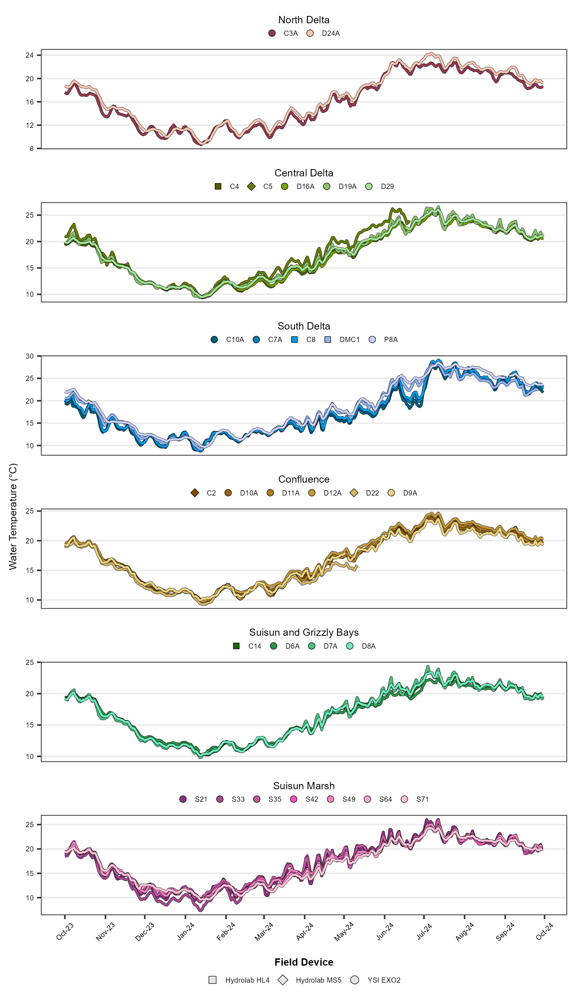
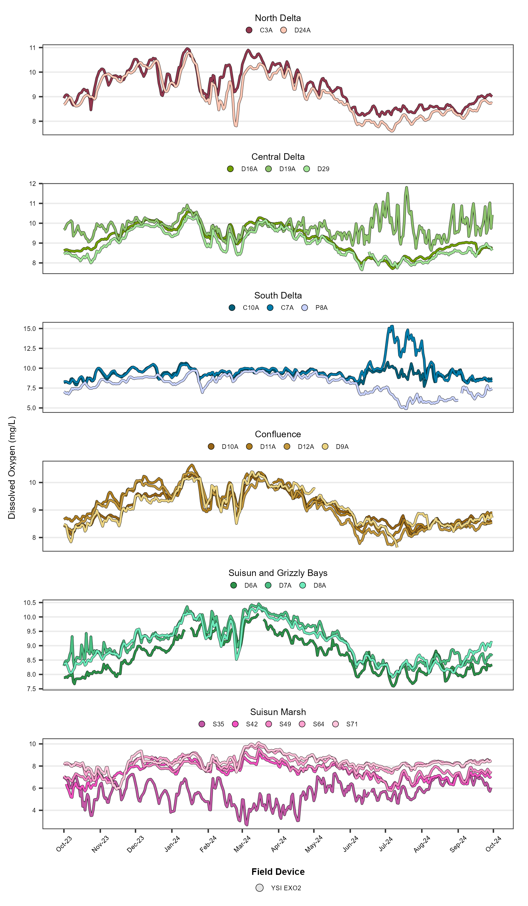
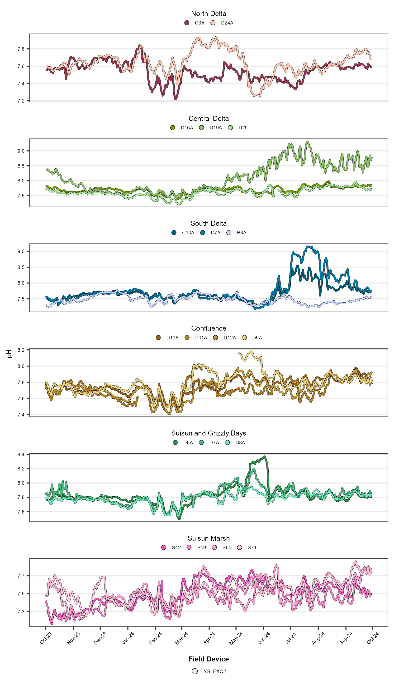
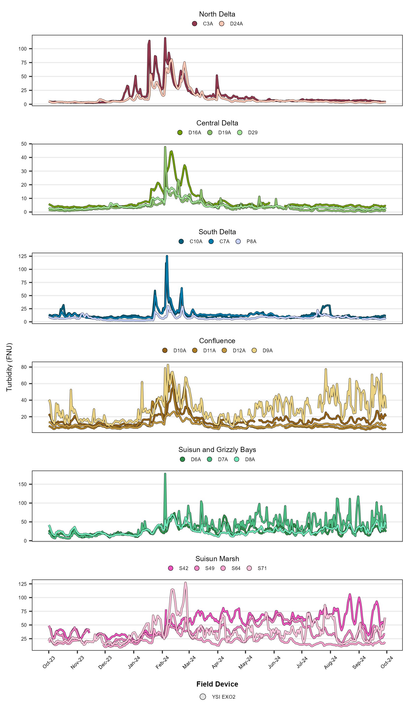

Continuous Water Quality Report
Introduction
The Department of Water Resources (DWR) and the US Bureau of Reclamation (USBR) are required by Water Right Decision 1641 (D-1641) to collect continuous water chemistry data to monitor the water quality at select sites in the upper San Francisco Estuary (Estuary). This report describes the results of these monitoring efforts for water year 2024 (October 1st 2023 through September 30th 2024) which was classified as a above normal year in the Sacramento and San Joaquin Valleys (source).
This report includes mandated stations collected by DWR’s Continuous Environmental Monitoring Program (CEMP) and Suisun Marsh Water Quality Program (SMWQP) as well as USBR’s Delta Water Quality Monitoring Program (USBR). Stations monitoring by other groups were not included in this report. Additional information about these programs can be found here.
Methods
Water quality data was continuously monitored at 29 sites throughout the Upper Estuary and were grouped into regions based on their geographic location (Figure 1; Table 1). These sites represent a variety of aquatic habitats, from narrow, freshwater channels to broad, estuarine bays.
Notes:
The Sherman Island station (SSI), which was called D22A in previous reports, has been changed back to D11A.
The Cache Slough station (C19) is listed as a monitoring station for D-1641 but has not been in operation since 2015 due to lack of use and safety concerns.
| Region | WY Index | Stations |
|---|---|---|
| Central Delta | San Joaquin | C4, C5, D16A, D19A, D29 |
| Confluence | Sacramento | C2, D9A, D11A, D12A, D22 |
| North Delta | Sacramento | C3A, D24A |
| South Delta | San Joaquin | C7A, C8, C10A, DMC1, P8A |
| Suisun and Grizzly Bays | Sacramento | C14, D6A, D7A, D8A, D10A |
| Suisun Marsh | Sacramento | S21, S33, S35, S42, S49, S64 |
Data were collected for six water quality parameters. For CEMP and SMWQP, all water samples were collected 1-meter below the water surface using a float-mounted YSI EXO2 multi-parameter water quality sonde. These parameters are:
- Water Temperature (°C)
- Specific Conductance (μS/cm 25°C)
- Dissolved Oxygen (mg/L)
- pH
- Turbidity (FNU)
- Fluorescence (μg/L)
For Reclamation, water samples were collected 1-meter below the water surface using float-mounted YSI 6-series and EXO-1 multi-parameter water quality sondes, as well as Hydrolab MS5 and HL4 water quality sondes. Parameters collected include:
- Water Temperature (°C)
- Specific Conductance (μS/cm 25°C)
Regional facet graphs were created for each parameter. The average, minimum, and maximum values were determined for parameter, both overall and per region. Average summary statistics are reported as the mean (μ) ± the standard deviation.
For more in-depth methodology, see here.
Results
Water Temperature
The average water temperature value was 17.10 ± 4.64 °C. Values ranged from 7.34 °C to 29.10 °C. Per region average, minimum, and maximum values are shown in Table 2; time series plots are shown in Figure 2.
| Statistic | Central Delta | Confluence | North Delta | South Delta | Suisun and Grizzly Bays | Suisun Marsh |
|---|---|---|---|---|---|---|
| Average | 17.40 | 16.60 | 16.30 | 17.90 | 16.70 | 17.10 |
| Min | 9.33 | 9.28 | 8.65 | 8.76 | 9.82 | 7.34 |
| Max | 26.60 | 24.60 | 24.30 | 29.10 | 24.40 | 26.00 |

Specific Conductance
The average specific conductance value was 3020 ± 4860 µS/cm. Values ranged from 50 µS/cm to 28700 µS/cm. Per region average, minimum, and maximum values are shown in Table 3; time series plots are shown in Figure 3.
| Statistic | Central Delta | Confluence | North Delta | South Delta | Suisun and Grizzly Bays | Suisun Marsh |
|---|---|---|---|---|---|---|
| Average | 247 | 1850 | 153 | 330 | 8130 | 5060 |
| Min | 64 | 85 | 98 | 50 | 110 | 278 |
| Max | 1300 | 16300 | 294 | 785 | 28700 | 16700 |

Dissolved Oxygen
The average dissolved oxygen value was 8.72 ± 1.24 mg/L. Values ranged from 2.67 mg/L to 15.30 mg/L. Per region average, minimum, and maximum values are shown in Table 4; time series plots are shown in Figure 4.
| Statistic | Central Delta | Confluence | North Delta | South Delta | Suisun and Grizzly Bays | Suisun Marsh |
|---|---|---|---|---|---|---|
| Average | 9.31 | 9.11 | 9.23 | 8.98 | 8.98 | 7.23 |
| Min | 7.65 | 7.64 | 7.60 | 4.91 | 7.59 | 2.67 |
| Max | 11.80 | 10.60 | 11.00 | 15.30 | 10.50 | 9.97 |

Stockton Station DO Values
C-EMP monitors DO at the Stockton Ship channel to determine if/when it fall below limits established by the CVRWQCB (1998). For the months that coincide with the passage of fall-run Chinook salmon (October, November, and September), values fell below the 6 mg/L limit in September. For all other months, values fell below the 5 mg/L limit in July. A boxplot of the DO values is shown in Figure 5.
pH
The average pH value was 7.69 ± 0.26. Values ranged from 7.16 to 9.31. Per region average, minimum, and maximum values are shown in Table 5; time series plots are shown in Figure 6.
| Statistic | Central Delta | Confluence | North Delta | South Delta | Suisun and Grizzly Bays | Suisun Marsh |
|---|---|---|---|---|---|---|
| Average | 7.80 | 7.75 | 7.59 | 7.65 | 7.80 | 7.48 |
| Min | 7.22 | 7.41 | 7.22 | 7.18 | 7.49 | 7.16 |
| Max | 9.31 | 8.18 | 7.94 | 9.15 | 8.37 | 7.82 |

Turbidity
The average turbidity value was 19.10 ± 17.90 FNU. Values ranged from 0.17 FNU to 178.00 FNU. Per region average, minimum, and maximum values are shown in Table 6; time series plots are shown in Figure 7.
| Statistic | Central Delta | Confluence | North Delta | South Delta | Suisun and Grizzly Bays | Suisun Marsh |
|---|---|---|---|---|---|---|
| Average | 5.24 | 17.00 | 12.80 | 11.30 | 26.60 | 37.60 |
| Min | 0.17 | 4.44 | 2.47 | 2.15 | 5.79 | 9.01 |
| Max | 47.70 | 82.70 | 119.00 | 126.00 | 178.00 | 106.00 |

Chlorophyll a Fluorescence
The average fluorescence value was 3.77 ± 5.29 µg/L. Values ranged from 0.72 µg/L to 87.90 µg/L. Per region average, minimum, and maximum values are shown in Table 7; time series plots are shown in Figure 8.
| Statistic | Central Delta | Confluence | North Delta | South Delta | Suisun and Grizzly Bays | Suisun Marsh |
|---|---|---|---|---|---|---|
| Average | 2.23 | 2.27 | 2.30 | 8.01 | 2.72 | 4.95 |
| Min | 0.73 | 0.72 | 0.74 | 1.30 | 0.95 | 1.10 |
| Max | 5.33 | 10.00 | 6.47 | 87.90 | 13.70 | 16.90 |
Interpretations
Write interpretations here
References
[CVRWQCB] Central Valley Regional Water Quality Control Board. (1998). Water Quality Control Plan for the California Regional Water Quality Control Board Central Valley Region, the Sacramento River Basin, and San Joaquin River Basin [Basin Plan] (4th ed.).
[SWRCB] State Water Resources Control Board. (1995). Water Quality Control Plan for the San Francisco Bay/Sacramento-San Joaquin Estuary [Bay-Delta Plan] (Adopted May 22, 1995, pursuant to Water Right Order 95-1). Sacramento, CA.
[SWRCB] State Water Resources Control Board. (1999). Water Rights Decision 1641 for the Sacramento-San Joaquin Delta and Suisun Marsh (Adopted December 29, 1999, Revised in Accordance with order WR2000-02 March 15, 2000). Sacramento, CA.
Archived Reports
Old EMP continuous water quality reports can be found here.